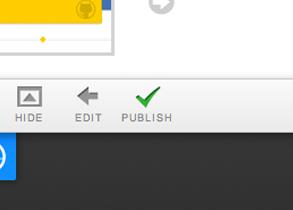

-
 Theme
Theme
-  Publish
Free Hosting
GitHub Pages are hosted for free and easily published through our site, the GitHub for Mac app, or from the command line. Manage your site’s content from GitHub using the tools and workflow that you’re familiar with. Learn about publishing with GitHub Pages here.
Page Generation with Themes
If you’re creating a page for your project, check out our automatic generator. You can author your page content in Markdown and toggle through our selection of designer themes. Many of our themes are responsive and include layouts optimized for mobile devices.
Manual Pages and Jekyll
There are a few ways to create GitHub Pages, including manually pushing html or a Jekyll site. You can easily redirect your page to a custom url. To read more about creating Pages manually with Jekyll, read the documentation here.